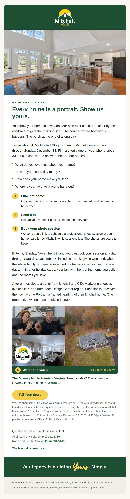
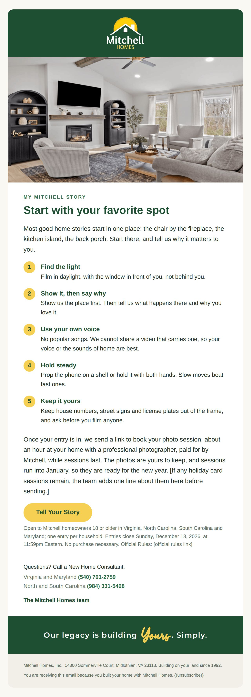
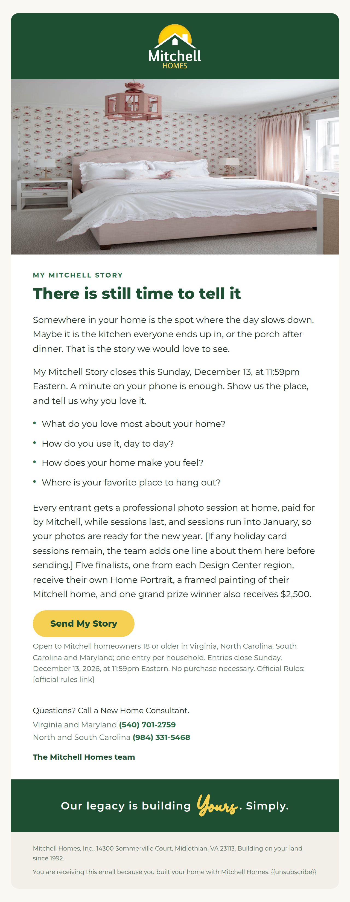
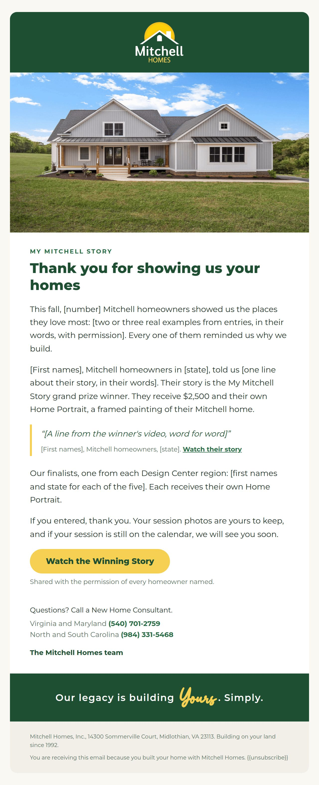

My Mitchell Story
Every home is a portrait. Show us yours. #MyMitchellStory
My Mitchell Story invites Mitchell homeowners to show us, in a short phone video, what they love about their home, how they live in it and where they like to spend their time. Every eligible entrant gets a professional photo session at home, paid for by Mitchell, while sessions last, with the photos theirs to keep and, for entries by Sunday, November 29, ready in time for holiday cards; five finalists, one from each Design Center region, receive their own Home Portrait, a framed painting of their Mitchell home, and one grand prize winner also receives $2,500. It opens at Homeowner Appreciation Night at all five Design Centers on Tuesday, November 17, 2026, and closes Sunday, December 13, 2026; every date and amount is a proposal for Mitchell to confirm.
How it works
- Film a short video at home on your phone, about 30 to 90 seconds.
- Answer one or more of the four questions, in your own words and your own voice.
- Send it through the entry form: upload the video or paste a link.
- We confirm your entry and send a link to book your photo session at home, paid for by Mitchell, while sessions last. Enter by Sunday, November 29, and you can book a session by Saturday, December 5, with your edited photos back within five business days, in time for holiday cards.
- After entries close, a panel from Mitchell and CEA Marketing chooses five finalists, one from each Design Center region, and one grand prize winner.
- Want to share it too? Post it on your own Instagram or TikTok with #MyMitchellStory and tag Mitchell Homes. Welcome, never required.
The four questions homeowners answer
- What do you love most about your home?
- How do you use it, day to day?
- How does your home make you feel?
- Where is your favorite place to hang out?
What homeowners receive (proposal)
- Every eligible entrant: A professional photo session at their Mitchell home, about 45 to 60 minutes, paid for by Mitchell: family photos in front of the home they built, plus the rooms and spots they love, including the favorite spot from their video. The edited photos are theirs to keep.
- Five finalists, one from each Design Center region: Their own Home Portrait: a framed painting of their Mitchell home.
- Grand prize, one winner chosen from the five finalists: $2,500, plus their Home Portrait.
Judging
- The story (40 percent): How clearly and personally the entry tells what the homeowner loves about the home, and why.
- The home in everyday life (30 percent): How the home shows up in the way they live: the rooms they use, the routines, the favorite places.
- How it feels to watch (30 percent): The warmth, honesty and feeling of home that come through.
- Never judged (): Who appears in the video, how many people appear, or whether anyone appears at all; the size, price, plan or location of the home; video production quality; likes, views, comments or followers.
- How it works (): A panel of [three to five] judges from Mitchell and CEA Marketing scores every eligible entry. The top entry in each of the five Design Center regions is a finalist; the top finalist wins the grand prize. Ties go to the higher score for the story. A judged contest, not a random drawing.
Filming tips we give homeowners
- Film in daylight, with the light in front of you, not behind you.
- Start in your favorite spot, then tell us why it matters.
- Use your own voice. No popular songs: Mitchell cannot share a video that carries one.
- Hold the phone steady, or prop it on a shelf. Slow moves beat fast ones.
- Get close when you talk, and turn off the TV and the dishwasher.
- Keep house numbers, street signs and license plates out of the frame.
- Ask before you film anyone, and keep children's full names out of it.
- One take is fine. Real beats perfect.
Questions for Mitchell
- The $2,500: In what form does the grand prize winner receive $2,500: a check, a prepaid card, a gift card, or something else? Our recommendation: A check is the simplest to deliver and report.
- Photo sessions: How many sessions, or what budget, and which photographers? One photographer per Design Center region, or one who travels? How far from a Design Center will they travel? Our recommendation: Set a number per region, so no region runs out first. CEA can shortlist photographers in each region. Sessions through January 31, 2027.
- Holiday card window: How many photo sessions will Mitchell fund in the holiday card window (Wednesday, November 18 to Saturday, December 5, Thanksgiving weekend included, for entries by Sunday, November 29), and can the photographers deliver edited photos within five business days? Our recommendation: Hold a set number of window sessions per region and confirm the five-business-day delivery in each photographer's agreement before ho2 names it on November 4. If either falls short, ho2, ho3, the launch text and the launch posts drop the holiday card line.
- Home Portraits: Who paints the five Home Portraits, at what size, in what frame, by when, and at what value (for the rules)? Our recommendation: An artist working from each finalist's session photos, delivered privately in January.
- Showing the paintings: May a finalist's or the winner's painting ever be shown publicly? Our recommendation: Keep them private. The painting is the reward, the same promise the Home Portrait quiz makes, and showing one would break the rule that no painted portrait appears before someone takes the quiz.
- Judges: Who sits on the panel from Mitchell (for example Scott Sleeme, Deven Sellers, Brittany Horner) and from CEA Marketing, and how many judges in all? Our recommendation: Three to five judges, with no one judging an entry from a homeowner they personally sold to.
- Homeowner Appreciation Night: Approve Tuesday, November 17, 5:30pm to 7:30pm at all five Design Centers, with staffing, refreshments and a budget per studio. Our recommendation: All five studios, with the photo session booking table and story corner at each. See E7 in events.md.
- Official Rules: Legal review of the draft rules, including the questions for legal in its last section. Our recommendation: Start the review by October 30 so the rules are final before the November 4 invitation names the contest.
- Eligibility: Are later owners of a Mitchell-built home (bought from an earlier owner) eligible? Do the exclusions cover CEA Marketing, the photographers and the artist, as drafted? Our recommendation: Yes to later owners, verified by deed or tax record. Keep the wider exclusions.
- The homeowner list: Where do past homeowners live today (Builder Studio or Lasso), how are they marked, and which have email and text consent? Our recommendation: Build the Past Mitchell homeowners smart list in Builder Studio before November 2, with a view per division.
- Homeowners with open warranty issues: Should homeowners with an open warranty issue get the invitation and contest emails? Our recommendation: Yes, after a personal call from their consultant or the warranty team first.
- Contest coordinator: Who at Mitchell checks entries, books sessions and answers questions, and what email address appears in the rules? Our recommendation: One named coordinator and one contest inbox.
- Usage: How long may Mitchell use entries (the license term), how are homeowners credited, and how fast are takedowns? Our recommendation: First names and state; three years; takedown within five business days.
- Social handles: Which Mitchell Homes Instagram and TikTok handles do entrants tag?
- Entry form: What video file size does the Builder Studio form accept? Our recommendation: If it is small, lead with the paste-a-link field and keep upload as the second option.
The dates
- Wednesday, November 4, 2026 · Invitation to Homeowner Appreciation Night (ho2) to past homeowners. Facebook events and Google event posts go up (E7).
- Thursday, November 5 to Tuesday, November 10, 2026 · New Home Consultants personally invite the homeowners they built with.
- Monday, November 16, 2026 · RSVP reminder text. Photo session calendars live in Builder Studio, holiday card window first, so homeowners can book at the event.
- Tuesday, November 17, 2026, 5:30pm to 7:30pm · Homeowner Appreciation Night at all five Design Centers. Entries open at 5:30pm Eastern.
- Wednesday, November 18, 2026 · Launch email (ho3) to homeowners who did not come; each consultant's follow-up email to those who did. Announcement post and Google post. Photo sessions begin.
- Thursday, November 19, 2026 · Launch text to homeowners with text consent who did not RSVP.
- Wednesday, November 18 to Saturday, December 5, 2026 · Holiday card window: homeowners who enter by Sunday, November 29 book their session in these dates, Thanksgiving weekend (Friday, November 27 and Saturday, November 28) included, and get their edited photos within five business days, in time for holiday cards.
- Sunday, November 29, 2026 · Last day to enter for a holiday card session.
- From Wednesday, November 18 · Photo sessions roll as entries are confirmed, through [January 31, 2027].
- Fridays, November 20, December 4 and December 11, 2026 · Entrant spotlights on social, only with the entrant's consent.
- Wednesday, December 2, 2026 · Filming tips email (ho4) to homeowners who have not entered.
- Wednesday, December 9, 2026 · Last-week email (ho5) to homeowners who have not entered.
- Thursday, December 10, 2026 · Last-week text to homeowners with text consent who have not entered.
- Sunday, December 13, 2026, 11:59pm Eastern · Entries close.
- Monday, December 14 and Tuesday, December 15, 2026 · Judging.
- Tuesday, December 15, 2026 · Finalists and the potential grand prize winner get a phone call, then their note (hw3, hw4). Documents due within five business days.
- Thursday, December 17, 2026 · Finalists announced on social.
- Friday, December 18, 2026 · Grand prize winner announced (ho6 and social), once verification is complete.
- [Date, with the artist] · Home Portraits delivered to the five finalists, privately.




The copy (29 pieces)
THANK YOU FOR BUILDING WITH US
Every Mitchell home started with someone who could already picture it: the porch, the kitchen, the room where everyone ends up. You brought that picture to us, and then you made the home your own.
So we would like to say thank you, in person. On Tuesday, November 17, from 5:30pm to 7:30pm, every Mitchell Design Center is hosting Homeowner Appreciation Night. Catch up with the New Home Consultants and Design Consultants who helped build your home, meet other Mitchell homeowners, and bring the family. [Refreshments: Mitchell to confirm.]
It is also the night we open My Mitchell Story, a chance to show us, in a short phone video, what you love about your home. Everyone who enters gets a professional photo session at home, paid for by Mitchell, while sessions last. Book yours that night, and if your entry is in by Sunday, November 29, your family photos in front of your home will be ready in time for holiday cards.
RSVP: {{trigger_link.ukeqlhc7kCBoenFieOsI}}
Fredericksburg, Richmond (Midlothian), Newport News, Raleigh (Garner) and Wilmington (Belville), 5:30pm to 7:30pm local time. Please RSVP so each studio can plan.
Questions? Call a New Home Consultant.
Virginia and Maryland (540) 701-2759
North and South Carolina (984) 331-5468
The Mitchell Homes team
Mitchell Homes, Inc., 14300 Sommerville Court, Midlothian, VA 23113.
Unsubscribe: {{unsubscribe}}EVERY HOME IS A PORTRAIT. SHOW US YOURS.
You know your home in a way no floor plan ever could. The chair by the window that gets the morning light. The counter where homework happens. The porch at the end of a long day.
Tell us about it. My Mitchell Story is open to Mitchell homeowners through Sunday, December 13. Film a short video on your phone, about 30 to 90 seconds, and answer one or more of these:
* What do you love most about your home?
* How do you use it, day to day?
* How does your home make you feel?
* Where is your favorite place to hang out?
Film it at home: On your phone, in your own voice. No music needed, and no need to be perfect.
Send it in: Upload your video or paste a link on the entry form.
Book your photo session: We send you a link to schedule a professional photo session at your home, paid for by Mitchell, while sessions last. The photos are yours to keep.
Enter by Sunday, November 29, and you can book your session any day through Saturday, December 5, including Thanksgiving weekend, when the whole family is home. Your edited photos arrive within five business days, in time for holiday cards: your family in front of the home you built, and the rooms you love.
After entries close, a panel from Mitchell and CEA Marketing chooses five finalists, one from each Design Center region. Each finalist receives their own Home Portrait, a framed painting of their Mitchell home. One grand prize winner also receives $2,500.
Homeowner story: The Downey family, Henrico, Virginia. Need an idea? This is how the Downey family told theirs.
Watch: https://www.youtube.com/watch?v=9vmi-miQzKU
Tell Your Story: [entry form link]
Want to share it too? Post it on your own Instagram or TikTok with #MyMitchellStory and tag Mitchell Homes. Never required: entries count only through the form. Open to Mitchell homeowners 18 or older in Virginia, North Carolina, South Carolina and Maryland; one entry per household. Entries close Sunday, December 13, 2026, at 11:59pm Eastern. No purchase necessary. Official Rules: [official rules link]
Questions? Call a New Home Consultant.
Virginia and Maryland (540) 701-2759
North and South Carolina (984) 331-5468
The Mitchell Homes team
Mitchell Homes, Inc., 14300 Sommerville Court, Midlothian, VA 23113.
Unsubscribe: {{unsubscribe}}START WITH YOUR FAVORITE SPOT
Most good home stories start in one place: the chair by the fireplace, the kitchen island, the back porch. Start there, and tell us why it matters to you.
Find the light: Film in daylight, with the window in front of you, not behind you.
Show it, then say why: Show us the place first. Then tell us what happens there and why you love it.
Use your own voice: No popular songs. We cannot share a video that carries one, so your voice or the sounds of home are best.
Hold steady: Prop the phone on a shelf or hold it with both hands. Slow moves beat fast ones.
Keep it yours: Keep house numbers, street signs and license plates out of the frame, and ask before you film anyone.
Once your entry is in, we send a link to book your photo session: about an hour at your home with a professional photographer, paid for by Mitchell, while sessions last. The photos are yours to keep, and sessions run into January, so they are ready for the new year. [If any holiday card sessions remain, the team adds one line about them here before sending.]
Tell Your Story: [entry form link]
Open to Mitchell homeowners 18 or older in Virginia, North Carolina, South Carolina and Maryland; one entry per household. Entries close Sunday, December 13, 2026, at 11:59pm Eastern. No purchase necessary. Official Rules: [official rules link]
Questions? Call a New Home Consultant.
Virginia and Maryland (540) 701-2759
North and South Carolina (984) 331-5468
The Mitchell Homes team
Mitchell Homes, Inc., 14300 Sommerville Court, Midlothian, VA 23113.
Unsubscribe: {{unsubscribe}}THERE IS STILL TIME TO TELL IT
Somewhere in your home is the spot where the day slows down. Maybe it is the kitchen everyone ends up in, or the porch after dinner. That is the story we would love to see.
My Mitchell Story closes this Sunday, December 13, at 11:59pm Eastern. A minute on your phone is enough. Show us the place, and tell us why you love it.
* What do you love most about your home?
* How do you use it, day to day?
* How does your home make you feel?
* Where is your favorite place to hang out?
Every entrant gets a professional photo session at home, paid for by Mitchell, while sessions last, and sessions run into January, so your photos are ready for the new year. [If any holiday card sessions remain, the team adds one line about them here before sending.] Five finalists, one from each Design Center region, receive their own Home Portrait, a framed painting of their Mitchell home, and one grand prize winner also receives $2,500.
Send My Story: [entry form link]
Open to Mitchell homeowners 18 or older in Virginia, North Carolina, South Carolina and Maryland; one entry per household. Entries close Sunday, December 13, 2026, at 11:59pm Eastern. No purchase necessary. Official Rules: [official rules link]
Questions? Call a New Home Consultant.
Virginia and Maryland (540) 701-2759
North and South Carolina (984) 331-5468
The Mitchell Homes team
Mitchell Homes, Inc., 14300 Sommerville Court, Midlothian, VA 23113.
Unsubscribe: {{unsubscribe}}THANK YOU FOR SHOWING US YOUR HOMES
This fall, [number] Mitchell homeowners showed us the places they love most: [two or three real examples from entries, in their words, with permission]. Every one of them reminded us why we build.
[First names], Mitchell homeowners in [state], told us [one line about their story, in their words]. Their story is the My Mitchell Story grand prize winner. They receive $2,500 and their own Home Portrait, a framed painting of their Mitchell home.
"[A line from the winner's video, word for word]"
[First names], Mitchell homeowners, [state]. Watch their story: [winner video link]
Our finalists, one from each Design Center region: [first names and state for each of the five]. Each receives their own Home Portrait.
If you entered, thank you. Your session photos are yours to keep, and if your session is still on the calendar, we will see you soon.
Watch the Winning Story: [winner video link]
Shared with the permission of every homeowner named.
Questions? Call a New Home Consultant.
Virginia and Maryland (540) 701-2759
North and South Carolina (984) 331-5468
The Mitchell Homes team
Mitchell Homes, Inc., 14300 Sommerville Court, Midlothian, VA 23113.
Unsubscribe: {{unsubscribe}}Hi {{contact.first_name}},
Thank you for sending in your My Mitchell Story. Your home is one we are proud to have built, and I cannot wait to watch it.
Here is what happens next:
* We confirm your entry within two business days.
* Then we send a link to book your photo session at home, paid for by Mitchell, while sessions last.
* Entries close Sunday, December 13, at 11:59pm Eastern, and we plan to announce the finalists about December 17.
If you need to change anything, just reply to this email.
{{user.name}}
New Home Consultant, Mitchell Homes
{{user.phone}}
Mitchell Homes, Inc., 14300 Sommerville Court, Midlothian, VA 23113.
Unsubscribe: {{unsubscribe}}Hi {{contact.first_name}},
Your My Mitchell Story entry is confirmed. Thank you.
Next is your photo session. A professional photographer will spend about 45 to 60 minutes at your home, paid for by Mitchell. Here is what to expect:
* We like to finish outside in the hour before sunset, when the front of the home looks its best.
* Inside, we photograph the kitchen, the porch and the favorite spot from your video, plus a few details.
* Family photos in front of your home, if you want them. Everyone pictured signs a short release, and a parent signs for any child.
* You receive [number] edited photos, yours to keep: within five business days for sessions through Saturday, December 5, and within [two weeks] after that.
Thinking of holiday cards? Book any day through Saturday, December 5, and your photos arrive in time. Friday, November 27 and Saturday, November 28 are open too, while the whole family is home for Thanksgiving.
Book your photo session: [photo session booking link]
If none of the times work, reply and we will find one. Sessions run through [January 31, 2027].
{{user.name}}
New Home Consultant, Mitchell Homes
{{user.phone}}
Mitchell Homes, Inc., 14300 Sommerville Court, Midlothian, VA 23113.
Unsubscribe: {{unsubscribe}}Hi {{contact.first_name}},
Congratulations again. As I said on the phone, your story is one of five My Mitchell Story finalists, one from each Design Center region.
As a finalist, you receive your own Home Portrait, a framed painting of your Mitchell home. [Artist and delivery date, once Mitchell confirms.]
To confirm your prize, please return these within five business days:
* The signed affidavit of eligibility and release (attached).
* A completed W-9, if your prizes total $600 or more in the year. [Tax advisor to confirm.]
* A good time for a short call about your Home Portrait.
We announce the finalists on Thursday, December 17, so please keep the news in the family until then. Thank you for showing us your home.
{{user.name}}
New Home Consultant, Mitchell Homes
{{user.phone}}
Mitchell Homes, Inc., 14300 Sommerville Court, Midlothian, VA 23113.
Unsubscribe: {{unsubscribe}}Hi {{contact.first_name}},
Congratulations again. Of every story we received, the judges chose yours as the My Mitchell Story grand prize winner.
You receive $2,500 [as a check, prepaid card or gift card, once Mitchell confirms] and your own Home Portrait, a framed painting of your Mitchell home.
To confirm your prize, please return these within five business days:
* The signed affidavit of eligibility, release and publicity release (attached).
* A completed W-9. Prizes of $600 or more are reported on IRS Form 1099.
* A good time for a short call to plan the announcement and your Home Portrait.
We announce the winner on Friday, December 18, so please keep it in the family until then. Thank you for letting us share your story.
{{user.name}}
New Home Consultant, Mitchell Homes
{{user.phone}}
Mitchell Homes, Inc., 14300 Sommerville Court, Midlothian, VA 23113.
Unsubscribe: {{unsubscribe}}Hi [first name], [your name] from Mitchell. Join us for Homeowner Appreciation Night, Tue Nov 17, 5:30 to 7:30pm, at our [city] Design Center. Can you come?
To: Homeowners each New Home Consultant built with, 1-to-1, only where the consultant already texts that homeowner. A personal text, so no STOP line.
Mitchell Homes: See you tomorrow, Tue Nov 17, 5:30 to 7:30pm, for Homeowner Appreciation Night at our [city] Design Center. Reply STOP to opt out
To: Homeowners tagged homeowner appreciation rsvp who gave text consent.
Thank you for coming tonight, [first name]. It was so good to see you. Your My Mitchell Story link comes by email in the morning. Text me any time.
To: Each homeowner who came, 1-to-1 from the consultant who invited them. A personal text, so no STOP line.
Mitchell Homes: My Mitchell Story is open. Film what you love about your home by Nov 29 for holiday card photos on us: [trigger link] Reply STOP to opt out
To: Past homeowners with text consent who did not RSVP to Homeowner Appreciation Night and have not entered. Their only text that week. If the holiday card window is not confirmed, use: Mitchell Homes: My Mitchell Story is open. Show us what you love about your home in a short video by Dec 13: [trigger link] Reply STOP to opt out
Mitchell Homes: Your My Mitchell Story photo session is tomorrow at [time]. Need a different time? Just reply. Reply STOP to opt out
To: Entrants with a booked session who gave text consent.
Mitchell Homes: What do you love most about your home? Show us in a short video by Sun, Dec 13. Photo sessions on us: [trigger link] Reply STOP to opt out
To: Past homeowners with text consent who have not entered (no tag my mitchell story entry). Their only text that week. If sessions have run out, drop the words Photo sessions on us.
Hi [first name], it is [your name] from Mitchell. My Mitchell Story is open: a short phone video about what you love about your home. Entrants get a photo session at home, on us, while they last. Want the link?
Subject: I would love to see your home again Hi [first name], I still think about [one thing about their home or their build], and I would love to see how the home has turned out with you in it. We just opened My Mitchell Story for Mitchell homeowners. Film a short video on your phone, about 30 to 90 seconds, and tell us what you love most about your home, how you use it, or where you like to hang out. Everyone who enters gets a professional photo session at home, paid for by Mitchell, while sessions last, and the photos are yours to keep. Here is the link: [entry form link]?utm_source=sales_email&utm_medium=email&utm_campaign=fall26_homeowners&utm_content=nhc_email Entries close Sunday, December 13. If you have any questions, just reply. [your name] New Home Consultant, Mitchell Homes [your phone]
Before I let you go: we just opened something for Mitchell homeowners called My Mitchell Story. You film a short video on your phone about what you love about your home, and everyone who enters gets a professional photo session at the house, on us, while sessions last. Can I text you the link?
Glad we got that taken care of. One more thing, if you have a minute: Mitchell just opened My Mitchell Story for homeowners. It is a short phone video about what you love about your home, and everyone who enters gets a professional photo session at home, on us, while sessions last. Would you like someone to send you the link?
Every home is a portrait. Show us yours. Mitchell homeowners, My Mitchell Story is open. Film a short video on your phone, about 30 to 90 seconds, and tell us what you love most about your home, how you use it, how it makes you feel, or where you like to hang out. Every eligible entrant gets a professional photo session at home, paid for by Mitchell, while sessions last. The photos are yours to keep. Want family photos in front of your home for holiday cards? Enter by Sunday, November 29, and book your session as soon as this week, Thanksgiving weekend included. Five finalists, one from each Design Center region, receive their own Home Portrait, a framed painting of their Mitchell home, and one grand prize winner also receives $2,500. Enter by Sunday, December 13: [entry form link] Open to Mitchell homeowners 18 or older. No purchase necessary. Official Rules: [official rules link] #MyMitchellStory #MitchellHomes
Single image of a real Mitchell home exterior with no people, or a 15-second Reel of home-only footage Image: e.g. https://media.mitchellhomesinc.com/276/2026/3/24/07-DJI_20260224134444_0238_D_copy.jpg . Pin to the top of the Facebook page through December 13; on Monday, November 30, edit the caption to drop the holiday card sentences. Organic only. Never ask people to share, like or tag friends to enter (Meta promotion rules). Instagram: replace the link with Link in bio and set the bio link to [entry form link]?utm_source=instagram&utm_medium=organic_social&utm_campaign=fall26_homeowners&utm_content=mms_announce.
How to tell your Mitchell story, in four steps: 1. Film a short video at home on your phone, about 30 to 90 seconds. 2. Answer one or more: What do you love most about your home? How do you use it, day to day? How does your home make you feel? Where is your favorite place to hang out? 3. Send it through the entry form: upload it or paste a link. 4. Book your photo session at home, on us, while sessions last. Enter by this Sunday, November 29, and your photos are ready in time for holiday cards. Want to share it too? Post it on your own Instagram or TikTok with #MyMitchellStory and tag us. Never required. Enter by Sunday, December 13: [entry form link] Official Rules: [official rules link] #MyMitchellStory
Carousel, five slides of text on real Mitchell home photos with no people: 1 Every home is a portrait. Show us yours. 2 Film it at home. 3 Answer one question. 4 Send it in. 5 Your photo session is on us. Posted the day before Thanksgiving, so families home for the weekend can film and enter by Sunday. Organic only. Never ask people to share, like or tag friends to enter (Meta promotion rules). Instagram: replace the link with Link in bio and set the bio link to [entry form link]?utm_source=instagram&utm_medium=organic_social&utm_campaign=fall26_homeowners&utm_content=mms_howto.
Your phone is all you need. Five tips for your My Mitchell Story video: Film in daylight, with the light in front of you. Start in your favorite spot, then tell us why. Use your own voice. No popular songs, so we can share it. Hold steady, or prop the phone on a shelf. Keep house numbers and license plates out of the frame. One take is fine. Real beats perfect. Enter by Sunday, December 13: [entry form link] #MyMitchellStory
30-second Reel: a team member's hands filming a Mitchell home on a phone, tips on screen. Home-only footage, no faces, no popular music. If filmed in the Mitchell model home, do not name the plan until Brittany confirms its spelling. Never ask people to share, like or tag friends to enter (Meta promotion rules). Instagram: replace the link with Link in bio and set the bio link to [entry form link]?utm_source=instagram&utm_medium=organic_social&utm_campaign=fall26_homeowners&utm_content=mms_tips.
[First names] have lived in their Mitchell home in [state] since [year]. Their favorite place to hang out? [Their answer, in their words.] This is My Mitchell Story. Mitchell homeowners, show us yours by Sunday, December 13: [entry form link] #MyMitchellStory #MitchellHomes
The entrant's video as submitted, trimmed for length only Only entries with the spotlight box checked, after the coordinator confirms consent and the music rule. Credit first names and state; the town only if they agree; never a street, house number or child's name. Captions describe the home and the homeowner's words, never the town or neighborhood (fair housing). Quote word for word; trim any line Mitchell cannot claim (a build time, a price promise, financing terms). Organic only: never boost a video with people in it. Spotlights show variety, not a preview of the winners, and likes and views never count toward judging. Three days after entries open: if no entry with the spotlight box checked is ready, skip this one.
"[How their home makes them feel, in their words.]" [First names], Mitchell homeowners in [state], told us what coming home feels like. This is My Mitchell Story. Show us yours by Sunday, December 13: [entry form link] #MyMitchellStory #MitchellHomes
The entrant's video as submitted, trimmed for length only Only entries with the spotlight box checked, after the coordinator confirms consent and the music rule. Credit first names and state; the town only if they agree; never a street, house number or child's name. Captions describe the home and the homeowner's words, never the town or neighborhood (fair housing). Quote word for word; trim any line Mitchell cannot claim (a build time, a price promise, financing terms). Organic only: never boost a video with people in it. Spotlights show variety, not a preview of the winners, and likes and views never count toward judging.
A day in [first names]' Mitchell home in [state] starts [where their day starts, in their words]. This is My Mitchell Story, and there are two days left to tell yours. Entries close Sunday, December 13, at 11:59pm Eastern: [entry form link] #MyMitchellStory #MitchellHomes
The entrant's video as submitted, trimmed for length only Only entries with the spotlight box checked, after the coordinator confirms consent and the music rule. Credit first names and state; the town only if they agree; never a street, house number or child's name. Captions describe the home and the homeowner's words, never the town or neighborhood (fair housing). Quote word for word; trim any line Mitchell cannot claim (a build time, a price promise, financing terms). Organic only: never boost a video with people in it. Spotlights show variety, not a preview of the winners, and likes and views never count toward judging.
Mitchell homeowners, there is still time. My Mitchell Story closes Sunday, December 13, at 11:59pm Eastern. A minute on your phone is enough. Show us the place you love most at home, and tell us why. Every eligible entrant gets a professional photo session at home, on us, while sessions last. Enter here: [entry form link] Official Rules: [official rules link] #MyMitchellStory
Single image of a real Mitchell home at dusk with no people; the Sunday Story uses the same image with the link sticker Image: e.g. https://media.mitchellhomesinc.com/276/2026/3/3/ava_farmhouse-extended_sky.jpg . If sessions have run out, drop the photo session sentence. Never ask people to share, like or tag friends to enter (Meta promotion rules). Instagram: replace the link with Link in bio and set the bio link to [entry form link]?utm_source=instagram&utm_medium=organic_social&utm_campaign=fall26_homeowners&utm_content=mms_last.
Meet the five My Mitchell Story finalists, one from each Design Center region. [First names, state: one line from their video, in their words.] [First names, state: one line.] [First names, state: one line.] [First names, state: one line.] [First names, state: one line.] Thank you to every homeowner who showed us their home. The grand prize winner is announced Friday, December 18. #MyMitchellStory #MitchellHomes
Carousel: one home-only exterior photo from each finalist's session, with their release, first names and state on each slide Only finalists who returned their documents and agreed to publicity. Never show the Home Portrait paintings. Organic only.
[First names] love [what they love most about their home, in their words]. Their story, from their Mitchell home in [state], is the My Mitchell Story grand prize winner. "[One line from their video, word for word.]" They receive $2,500 and their own Home Portrait, a framed painting of their Mitchell home. Thank you to every homeowner who told us their story. Every home is a portrait, and yours showed us why we build. #MyMitchellStory #MitchellHomes
The winner's video as submitted, with their release Only after verification is complete. Never show the painting, not even at the hand-off: if Mitchell wants a moment on camera, film the winner's reaction with the frame turned away. Organic only.
Mitchell homeowners, what do you love most about your home? Show us in a short phone video, about 30 to 90 seconds, through Sunday, December 13, 2026. Every eligible entrant gets a professional photo session at home, paid for by Mitchell, while sessions last. Enter by Sunday, November 29, and your family photos in front of your home will be ready in time for holiday cards. Five finalists, one from each Design Center region, receive their own Home Portrait, a framed painting of their Mitchell home, and one grand prize winner also receives $2,500. Open to Mitchell homeowners 18 or older. No purchase necessary. Official Rules at the link.
Image: a real Mitchell home exterior, no people. If Google rejects the event post, post it as an Update. On Monday, November 30, edit the post to drop the holiday card sentence.